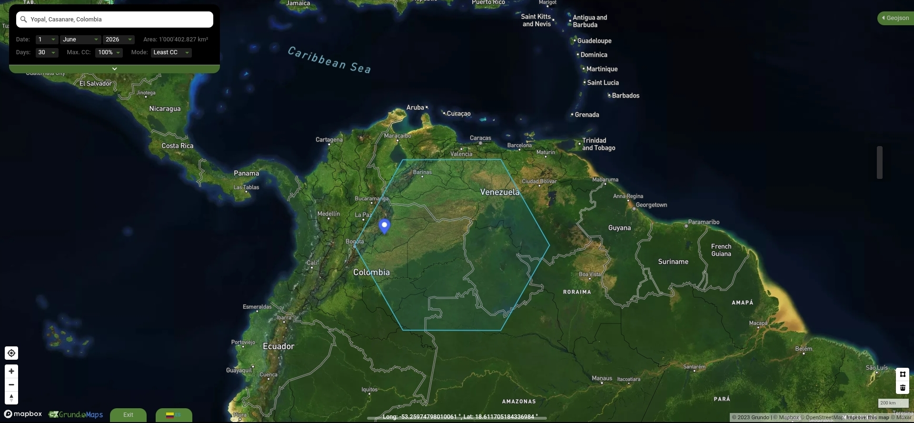

Defending the Basin Through Code
The Orinoco River basin is facing an unprecedented ecological crisis driven by aggressive agro-industrial expansion and habitat destruction. XR Orinoquia operates as an autonomous node combining urgent climate action with developer-driven open-source software. We arm local communities with mobile-first mapping stacks to generate irrefutable environmental evidence.

Our Methodology: Zero Bureaucracy, Full Stack
Traditional conservation institutions spend over 70% of their capital on administrative overhead. We don't. We design, deploy, and maintain our own digital pipeline. By leveraging lightweight terminal environments and cloud-free spatial analysis tools, we convert environmental observation directly into public web layers.
Biocultural Monitoring & Forensic Data
We break down ecological mapping into strict, algorithmically structured data vectors to measure environmental decay.

💀 Animal Forensics (Skeletal Remains)
We catalog and map native wildlife mortality. The georreferencing of skulls and animal remains in degraded lands serves as physical, undeniable forensic proof of severe hydric stress and chemical contamination.
⬢ Hexagonal Pollinator Grids
Using the honeycomb's perfect mathematical efficiency, we build regional hexagonal grids to track wild bee populations. Their decline acts as the algorithmic baseline predicting broader food security collapse.
Sacred Symmetry & Pre-Columbian Layouts
Ancient ancestral societies, including the Muisca trading pathways that connected the high Andes to the piedmont plains, managed resource allocation through high-level abstraction and symmetric design principles.

Symmetric Resistance Map Layers
Instead of relying on arbitrary political boundaries, our open GIS models incorporate tribal geometric frameworks and textile design patterns to delineate rigid, untouchable buffer zones for river basins and continuous ecosystems.
Urgent Data Briefing: Industrial Pressure on Yopal Riparian Ecosystems
Official statement and open data payload regarding recent structural biomass loss anomalies...
Historical Reconstruction of Casanare Basin Land Use Patterns
A long-form analysis utilizing open-source satellite stacks for legal territorial defense...
Godot Engines as Alternative Polity Simulators
Quick framework thoughts on using digital wallets to educate tourists on localized governance...
Developer-Driven Philanthropy
By backing this node, you are directly investing in open-source code and lean technological engineering deployed in the field. Every donation goes straight into data infrastructure and field testing, entirely visible on our ledger.
Infrastructure Stack Goals
Your support explicitly funds the ongoing development of:
- Automated GIS Workflows: Python-driven hexagonal binning toolsets for fast environmental processing.
- Mobile Laboratory Deployments: Optimizing low-overhead Unix/Terminal ecosystems on Android to run heavy geospatial algorithms directly on the field.
- Open Data Ledgers: Real-time mapping portals accessible to any grassroots defender.
What Your Capital Unlocks
• $50: Water multiparameter testing kits and field logs.
• $150: Specialized field equipment for pollinator tracking.
• $500+: Server hosting, offline geospatial hardware units, and direct support for rural tech-training workshops.
Back the Open-Source Environmental Stack
Convert your financial capital into functional, decentralized defensive technology.
Donate via Open Collective